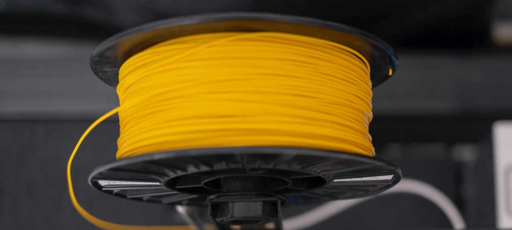

Materials in 3D printing are made of long strands of plastic (filament). They get pushed through
the heated nozzle of a 3d printer, where they are molten and reapplied to the print bed.
Filaments come in two sizes - 3mm and 1.75mm. Which one is used is mainly determined by the type
of printer at hand. Ultimaker devices for example use 3mm filament, while most other printers
use 1.75mm.
WHICH materials are there?
The most common materials used in 3d printing are PLA, ABS and PETG. PLA is a very good base
material which can be printed easily due to its low melting point of about 180 degrees celsius.
The only drawback is that it isnt very heat resistant. Printed objects must not exceed ambient
temperatures of 45 degrees - otherwise they will get soft and deform quickly.
This is
where ABS comes into the picture. ABS is a industrial grade 3d printing material. Industrial
grade means it is widely adopted as a material used in industrial applications such as injection
molding. An ABS printed object can withstand temperatures of up to 110 degrees celsius, but/svg
needs to be printed at about 250 degrees. On top of that ABS comes with a distinctive smell
which is definetly not for everyone.
PETG is like inbetween PLA and ABS, it doesnt smell
like ABS, but needs to printed at almost the same temperatures. On the other hand it prints very
easily and still withstands temperatures of 100 degrees celsius.

ARE they safe?
It depends. Some companies advertise their materials as safe for food and safe for toys. But this
needs to be taken with a grain of salt, because the safe labels do not account forthe production
process, which is 3d printing in this case. This study suggests that there are also toxic fumes
produced while 3d printing. So if you can get a printer with a housing and an air filter around
it, go ahead to safe on the safe side.
CAN I make my own?
Yes definetly, there are existing community efforts to build small home extruders. But it isnt as
easy as you might think. So before you get your feet wet in that, try to run the numbers for
bought
filament vs self made filament.